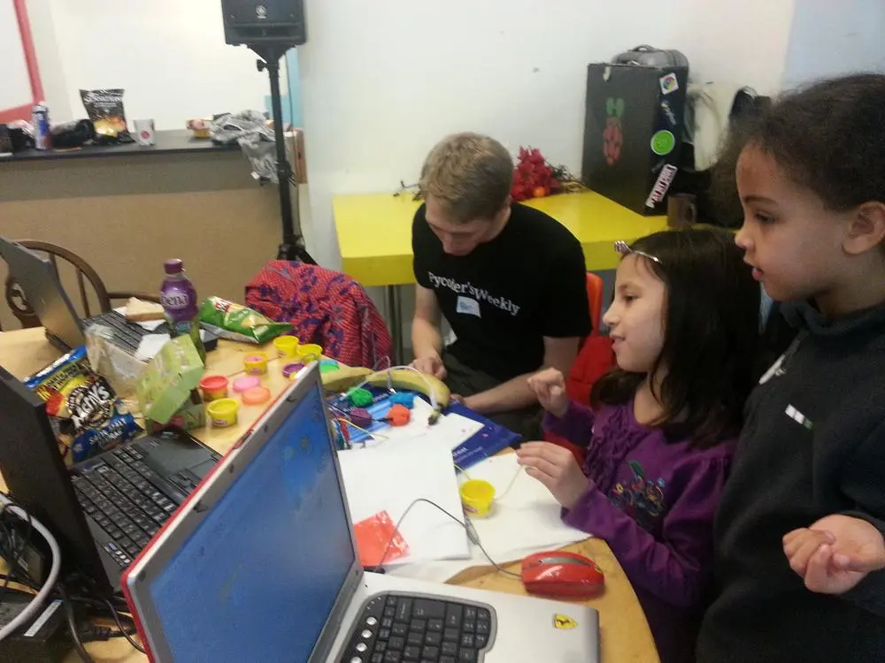
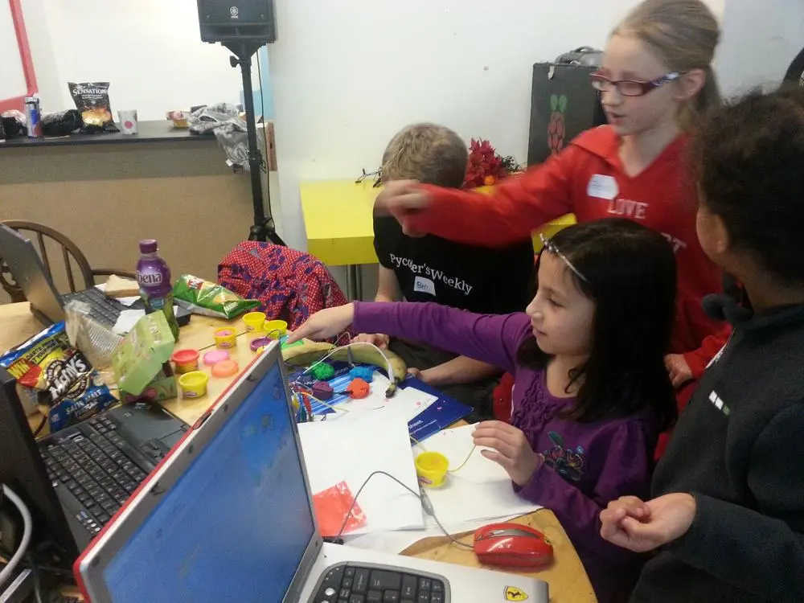
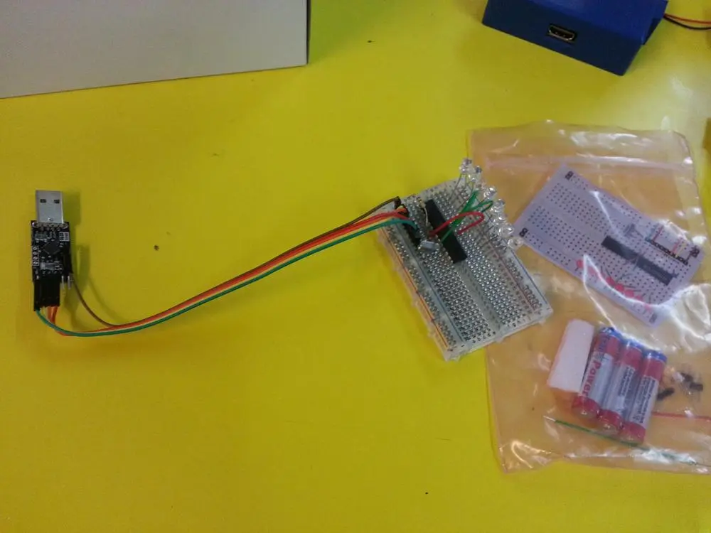

Date & Time
5 January 2013
11am - 3pm
Venue
Madlab
36-40 Edge Street
Manchester
M4 1HN
Summary
Scratch
and Python remains to be popular.
Steve brought in a set of
Makey Makey
which made
Scratch
more interactive.


The kids was playing with Scratch Piano and discovered it was fun using other children instead of playdoh as keypads.
We also had trying out the
shrimp boards
